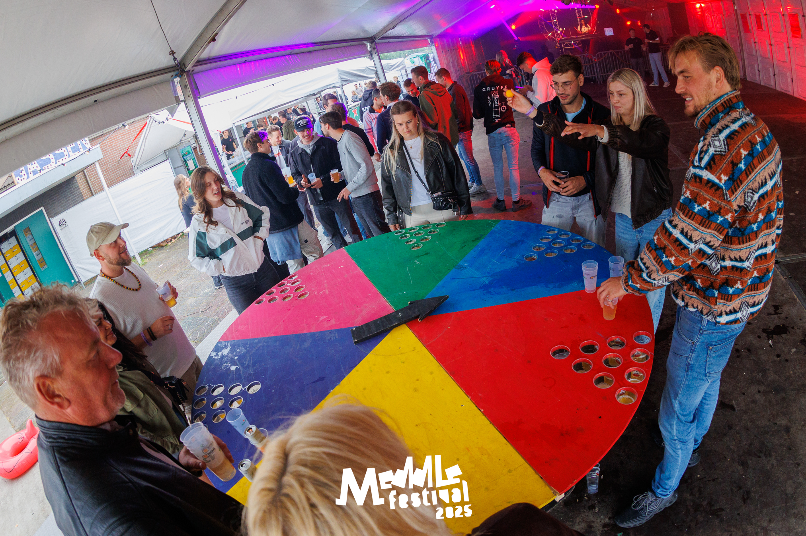
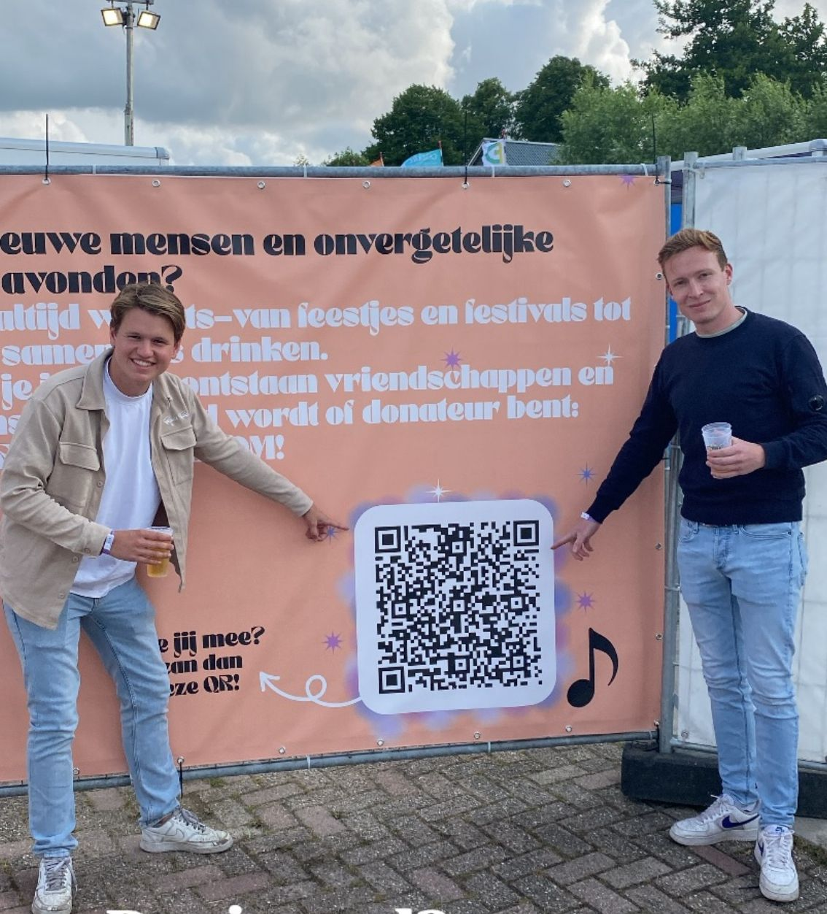
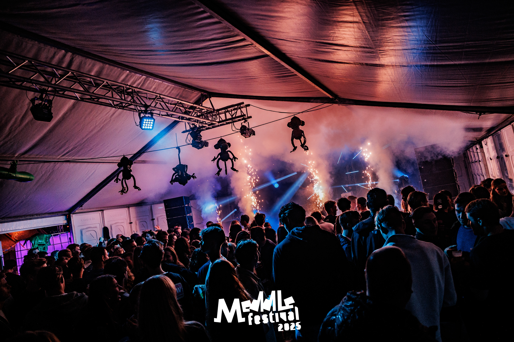

Welkom bij Meddle
Meddle is dé feest- en gezelligheidsvereniging van de lage landen. Ontdek onze activiteiten, ledeninformatie en alles wat Meddle zo bijzonder maakt!

Over Meddle
Lees alles over onze vereniging, de historie en onze doelen.
Activiteiten
Bekijk alle jaarlijkse evenementen, borrels en feesten inclusief datums en tijden.
Lid worden
Steun Meddle door lid te worden. Lees hier alles over de voordelen!
Meddle Festival
Kom alles te weten over het jaarlijkse Meddle Festival en bestel tickets!